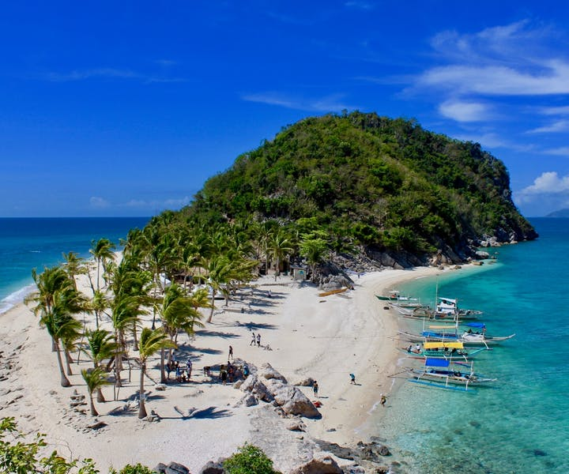
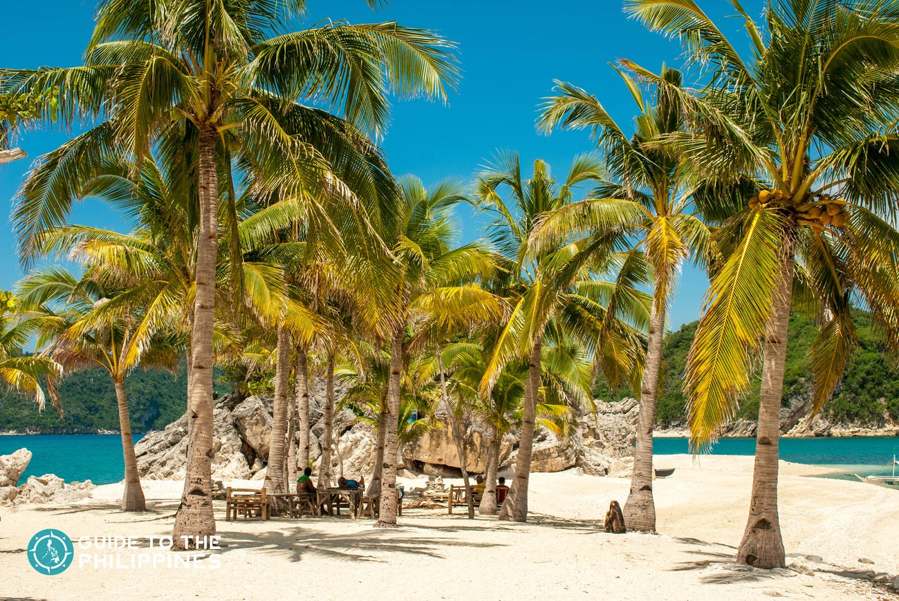
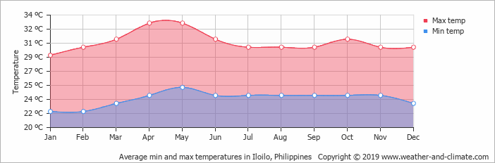

Exploring the top destinations in Iloilo is possible if your schedule permits it, but it requires a well-prepared itinerary to make it possible. We recommend at least 3-5 days to pull this off. You can also choose to visit just one or two destinations in Iloilo. Here’s a sample itinerary for Iloilo that you can take inspiration from:
Sample Itinerary
Day 1: Ancestral Houses +
Garin Farm
- 06:00 AM - Arrival in Iloilo International Airport,
travel to hotel for check-in - 07:30 AM - Breakfast at Netong’s Original
La Paz Batchoy and coffee at Madge Cafe - 09:00 AM - Go on a city tour to explore the
ancestral houses of Iloilo - 12:00 NN - Lunch at Tatoy’s Manokan and
Seafood - 01:00 PM - Continue city tour
- 03:00 PM - Eat Pancit Molo at Camiña Balay
nga Bato - 03:30 PM - Travel to Garin Farm
- 04:30 PM - Explore Garin Farm
- 06:00 PM - Travel back to the city
- 07:00 PM - Dinner and drinks at Smallville
Day 2: Islas de Gigantes
- 04:00 AM - Early breakfast
- 05:00 AM - ETD to Carles Port
- 08:00 AM - ETA in Carles Port, register and
start Islas de Gigantes island-hopping tour - 12:00 NN - Scallops lunch at one of the
islands - 01:30 PM - Continue the island-hopping tour
- 03:00 PM - ETD to Carles Port
- 04:30 PM - ETA at Carles Port, travel back to
Iloilo City - 07:30 PM - ETA at Iloilo City, wash up
- 08:30 PM - Dinner and drinks at Smallville
Day 3: Heritage Churches + Esplanade + Calle Real
- 07:00 AM - Breakfast
- 08:00 AM - Start city tour to explore heritage
churches - 12:00 NN - Lunch at Breakthrough
- 01:00 PM - Continue heritage church tour
- 03:00 PM - Try Molo bibingka in front of Molo
Church - 04:00 PM - Stroll along River Esplanade
- 05:00 PM - Explore Calle Real and taste the
Queen Siopao at Roberto’s - 06:00 PM - Dinner and drinks at Smallville
- 07:30 PM - Shop for souvenirs
- 09:00 PM - Travel to Iloilo International Airport
for late night flight
Best Time To Go There


Iloilo is a perfect destination almost year-round. However, you might not be able to enjoy the experience during the typhoon months from June to August, especially if you plan to go to the beaches or do island-hopping tours.
Make sure to check the weather update for incoming typhoons. If you want to combine seeing the tourist spots of Iloilo with a festive event, then you better time your visit during the Dinagyang Festival.
Dry and Summer Season | November to May
Most attractions in Iloilo are outdoors or will require you to ride a boat. That’s why the best months to plan your Iloilo trip is during the months where it’s sunny almost every day, from November to May. This covers the summer season in the Philippines which starts in March until mid-May.
Dinagyang Festival | January
Rock and dance to the stomping drumming beats of this festival, known for its lively music, graceful dances, and colorful costumes.
Dinagyang Festival, celebrated every third or fourth Sunday of January is one of the most popular and oldest festivals in the Philippines. This is a good time to experience Iloilo as everyone is in a jovial mood celebrating the festival by dancing in unison to the lively rhythms.
Paraw-Regatta | February
Believed to be Asia’s oldest traditional sea craft, the Paraw Regatta gathers seafarers for a race over the waters of Iloilo Strait from Iloilo City to the island of Guimaras, an island province beside Iloilo.
Aboard colorful Paraw sailboats, in dozens and sometimes numbering to a hundred, it dishes a spectacular sight as each Paraw glides smoothly over the sea.
The design of modern-day Paraws still possesses the original design of the Paraw sailboats of the first settlers of Iloilo who came from the island of Borneo in the early 13th century. First started in 1973, the Paraw Regatta is celebrated every 3rd weekend of the month of February.
Climate and Weather
Iloilo has a tropical climate and only has two seasons, dry and wet. The average temperature is 27.1 °C. The driest month is February, while the rainiest is August. The warmest month is during May, and the coldest temperature is felt usually around December to January or the holiday season.
How to Get There?
The province of Palawan and its top destinations are accessible via land, sea, and air travel. Puerto Princesa is often the gateway to the province of Palawan since more flights are going here than to other airports. Your choice of entry point will affect your budget and itinerary, so it's best to look into which place best fits your preferences.
By Flights

Iloilo International Airport hosts a number of airlines that flies directly to the city from various cities in the Philippines (Cebu, Clark, Davao, Cagayan de Oro, General Santos, Puerto Princesa, Cuyo and Sipalay) and even from a few international destinations such as Hong Kong and Singapore.
Leading airlines such as Philippine Airlines, Cebu Pacific Air and Air Asia are now making Iloilo airport as one of the major hubs in the country. Travel time by plane to Iloilo from Manila is just around 1 hour, and 30 minutes from Cebu. From Hongkong, it’s 2.5 hours away, and from Singapore, it’s 3.5 hours away.
By Ferry

There are four main seaports in Iloilo: the Domestic Port in Fort San Pedro, the International Port in Loboc, the Ortiz Port (which serves Guimaras to Iloilo and vice versa for just 15 minutes) and the Muelle Loney Port (serving Iloilo to Bacolod trips, around 1.5 hours of travel time). Giant transport shipping company 2Go also sails from Manila to Iloilo City for around 20 hours.
By Bus
Iloilo is the transportation hub of Panay Island with various bus companies such as Ceres Bus traveling directly from Boracay (4-5 hours), Kalibo in Aklan (3 hours), Roxas City in Capiz (2 hours) and San Jose in Antique (3-4 hours).
A RoRo (roll-on, roll-off) bus service connecting Manila to Iloilo also operates daily (around 20 hours).